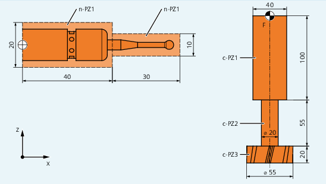

Protection zones previously defined in the part program can be activated at any time – or can be preactivated for subsequent activation by the PLC user program. Active protection zones can be deactivated at any time.
When activating or preactivating, it is also possible to relatively shift the reference point of the protection zone.
| Note |
|
A protection zone is only taken into account after the referencing of all geometry axes of the channel in which it has been activated. |
| Note |
Monitoring protection zonesIf a tool-related protection area is not active, the tool path is checked against the workpiece-related protection zones. If no workpiece-oriented protection zone is active, then there is no protection zone monitoring. |
| Predefined procedure to activate a channel-specific protection zone | ||
| Predefined procedure to activate a machine-specific protection zone | ||
| Number of the protection zone | ||
Data type: | INT | ||
| The channel-specific activation status is set using this parameter | ||
Data type: | INT | ||
Value: |
| Deactivate protection zone | |
| Preactivate protection zone | ||
| Activate protection zone | ||
| Preactivate protection zone with conditional stop | ||
| Additive offset values in the X/Y/Z direction The offset can take place in 1, 2, or 3 dimensions. The offset values refer to:
| ||
Data type: | REAL | ||
Possible collision of a milling cutter with the measuring probe is to be monitored on a milling machine. The position of the measuring probe is to be defined by an offset when the function is activated.
The following protection zones are defined for this:
A machine-specific and a workpiece-related protection zone for both the measuring probe holder (n-PZ1) and the measuring probe itself (n-PZ2).
A channel-specific and a tool-related protection zone for the milling cutter holder (c-PZ1), the cutter shank (c-PZ2) and the milling cutter itself (c-PZ3).
The orientation of all protection zones is in the Z direction.
The position of the reference point of the measuring probe on activation of the function must be X = -120, Y = 60 and Z = 80.
① | Name for the protection zone of the probe |
F | Toolholder reference point |
| Program code | Comment |
|---|---|
| DEF INT PROTZONE | ; Definition of a Help variable |
| G17 | ; machining plane XY |
| ; defining protection zones: | |
| NPROTDEF(1,FALSE,3,10,–10) | ; protection zone n–PZ1 |
| G01 X0 Y–10 | |
| X40 | |
| Y10 | |
| X0 | |
| Y-10 | |
| EXECUTE(PROTZONE) | |
| NPROTDEF(2,FALSE,3,5,–5) | ; protection zone n–PZ2 |
| G01 X40 Y–5 | |
| X70 | |
| Y5 | |
| X40 | |
| Y-5 | |
| EXECUTE(PROTZONE) | |
| CPROTDEF(1,TRUE,3,0,–100) | ; protection zone c–PZ1 |
| G01 X–20 Y–20 | |
| X20 | |
| Y20 | |
| X-20 | |
| Y-20 | |
| EXECUTE(PROTZONE) | |
| CPROTDEF(2,TRUE,3,–100,–150) | ; protection zone c–PZ2 |
| G01 X0 Y–10 | |
| G03 X0 Y10 J10 | |
| X0 Y–10 J–10 | |
| EXECUTE(PROTZONE) | |
| CPROTDEF(3,TRUE,3,–150,–170) | ; protection zone c–PZ3 |
| G01 X0 Y–27.5 | |
| G03 X0 Y27.5 J27.5 | |
| X0 Y27.5 J–27.5 | |
| EXECUTE(PROTZONE) | |
| ; activating protection zones: | |
| NPROT(1,2,–120,60,80) | ; activate protection zone n–PZ1 with offset |
| NPROT(2.2,–120,60,80) | ; activate protection zone n–PZ2 with offset |
| CPROT(1,2,0,0,0) | ; activate protection zone c–PZ1 |
| CPROT(2,2,0,0,0) | ; activate protection zone c–PZ2 |
| CPROT(3,2,0,0,0) | ; activate protection zone c–PZ3 |
See also:
Activating/deactivating protection zones (CPROT, NPROT): Further Information
Defining protection zones (CPROTDEF, NPROTDEF)
Checking for protection zone violation, working area limitation and software limit switches (CALCPOSI)